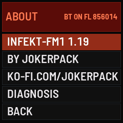
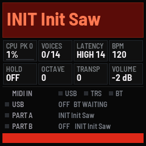

Guide
InfeKt-FM1 1.19, the short tour. Read it once, then keep it open while you play.
1Install and switch on
You need your FM-1, a USB data cable and a computer with Chrome or Edge.
- Already using InfeKt-FM1? Back up your banks first: on the installer's Patches tab, Back up all banks.
- Open the Install page and click Connect. Allow MIDI when the browser asks.
- Two boxes are ticked: the factory banks (they go into banks A and B) and Sete's nine wavetables. Untick what you want to keep.
- Click Install. Leave the cable in until the page says it is done.
- The FM-1 restarts with InfeKt-FM1. GLO › ABOUT shows the version.

GLO › ABOUT
When you switch on, a light runs across the keys. Just start playing: any key ends it.
Want your old firmware back? The installer has a section for that on its first tab.
2Choose sounds and play
The HOME screen shows your sound's name on top. Below it you see the voices in use, the tempo, HOLD, the octave and the volume.
- Turn PRESET to choose a sound. The first click opens the list.
- Your sounds live in six banks, A to F, with 128 places each. The installer puts the factory sounds into A and B. With the list open, OCT− and OCT+ jump to the next bank.
- Turn back past the first sound and you find INIT, a plain starting sound. One step further is RANDOMIZE: every press on REC rolls a new variation of your sound, SHIFT+HOME takes it back.
- Further on come your favourites, up to 16. EDIT FAVORITES lets you pick them.

The HOME screen
The 27 keys play with velocity. OCT− and OCT+ move two octaves each way. MASTER is the volume, ALGO the tempo.
REC on the HOME screen is HOLD: notes keep sounding until you press it again.
PLAY mode
Hold PLAY for half a second. Now the seven controls (the four knobs, SELECT, PRESET and ALGO) play the parameters you chose for them. Press SHIFT+PLAY to choose. Hold PLAY again to leave. A short press on PLAY always just starts or stops the sequencers.
| SHIFT | hold OCT− for half a second |
| SHIFT+HOME | undo (the last five changes of a sound) |
| OCT−+OCT+ | panic: hold both briefly. Everything fades out: notes, HOLD, the sequencers, and reverb, delay and shimmer are emptied. |
| SHIFT+SEQ | stop the sequencers |
| SHIFT+C#5 / D#5 | mono / poly |
3Change a sound and save it
The menu buttons are FX SEL ENV LFO EDIT ARP and GLO. Each opens a page of blocks. The lit block belongs to the four knobs.
- SELECT steps to the next block.
- At the end you find EDIT with even more parameters, and BACK.
- Knobs with a list (a filter mode, a wave, a destination) show the list on the first click.
- HOME takes you back.

ENV, the filter envelope
| SEL | filter 1 and 2, the filter modes. Press SEL again for the oscillators, the mixer and FM / sync. |
| ENV | amplifier and filter envelope |
| LFO | LFO 1, 2 and 3 |
| EDIT | the modulation matrix, slots 1 to 6 |
| FX | delay or reverb, Particles Shimmer, phaser, chorus, distortion, level |
| ARP | the arpeggiator |
| GLO | settings for the whole instrument |
Your changes stay while you play other sounds, until you save or switch off. SAVE lights up while something is not saved.
Save a sound
- Press SAVE. Choose a place with SELECT (another bank: OCT− / OCT+).
- Press REC and give it a name: SELECT picks the letter, K1 moves the cursor, K2 switches upper and lower case.
- Press REC. If the place is taken, press REC once more to replace it.
Particles Shimmer
Choose a reverb under FX. Then the SHIMMER block appears: AMOUNT, LAYERS (octave, octave and fifth, two octaves, octave and sub octave, fifth), MOD DPTH, a gentle pitch movement that makes it come alive, and TONE. Under EDIT you find the tail, the swell and the grain, WIDTH for the stereo spread and W GLIDE.
Particles Shimmer needs the memory Bluetooth would use. Switch Bluetooth off (GLO › BLUETOOTH), press SAVE and restart the FM-1. With Bluetooth on the screen says SHIMMER: BT OFF.
4Arpeggiator, Hybrid Sequencer and drums
Arpeggiator
Press ARP: mode, pattern, octaves and clock, then the groove (length, swing, hold, tempo). The button blinks in time while the arpeggiator is on.
Hybrid Sequencer
Press SEQ. The white keys are now the steps, 16 at a time. OCT− / OCT+ show the next 16.
- Tap a white key to switch a step on or off.
- Hold a step to hear it. Its sequence pauses while you hold it.
- Hold and turn to change the step: EVENT, LENGTH, ALIGN, VEL, OFFSET.
- With no step held, the knobs set the pattern's length (16, 32 or 64), its speed, the pattern number, CLEAR and the base note.
- PLAY starts and stops.

The Hybrid Sequencer
Chord steps: hold a step, turn EVENT to CHORD and let go. Tap up to six notes. REC keeps the chord, HOME cancels.
Play it from the keys: a step's EVENT can also be a finger. FING 1 to FING 8 play the notes you hold on the keys, F POLY plays all of them. So the pattern follows your hands. With KEY LATCH (in the sequencer's EDIT list) your chord keeps playing after you let go. PATCH ARP is on as standard: chord and F POLY steps then run through the sound's arpeggiator.
Record: press REC, then PLAY, and play along with the click. You get two bars of count-in first (GLO › SEQ › PRECOUNT: off, 1 or 2). With REC QUANT OFF your timing is kept as you played it.
Drums
Press SEQ again to move on to the pattern launcher and the drum machine. On the drum page the black keys choose one of 11 instruments: BD SD LT MT HT RS CP CH OH CY CB. The white keys are its steps. REC records, SHIFT+black key clears an instrument. Shape the kit under EDIT › DRUM KIT: a new kit starts with the 909 bass drum and the sampled hi-hats, the rest is 808.
SAVE on a sequencer page saves your patterns. SHIFT+HOME undoes a clear or a recording.
5Two parts: layer and split
Go to GLO › MULTI › MODE:
- SINGLE: one sound.
- LAYER: two sounds on every key.
- SPLIT: part B below the split point, part A from there up. Set the point under GLO › MULTI › SPLIT.
- CHANNELS: part B listens on its own MIDI channel.
Tap HOME to switch between part A and B, or use SHIFT+A#4 for A and SHIFT+F#5 for B. Part B shows in green. The menus, PRESET and SAVE work on the part you see.
Each part has its own sound, its own HOLD and its own Hybrid Sequencer (SEQ A, SEQ B). Delay and reverb are shared and set in part A. SHIFT+ALGO sets a part's volume.
6MIDI and Bluetooth
The FM-1 talks MIDI over USB, Bluetooth and the TRS jack (the jack is an input).
- GLO › MIDI: the channel, the drum channel (10 as standard), which inputs listen, where notes go out, and the clock: internal, external or master.
- Bluetooth: switch the FM-1 on first, then your device. Go to GLO › BLUETOOTH › SEARCH, choose the device and press REC. Next time it connects by itself. FORGET clears the list.
- Hold REC for a second to switch Bluetooth on or off.
- Over USB the FM-1 is also a sound card: record it straight into your computer. Turn MASTER well up.
Settings worth knowing
| GLO › AUDIO › LATENCY | LOW plays a touch faster, MED and HIGH give you more voices (14 and 16). |
| GLO › AUDIO | UNI MAX SINGLE, UNI MAX MULTI and MONO UNI MAX: how many unison voices a note may take with one part, with two parts and in mono (4, 2 and 6 as standard). |
| GLO › AUDIO › REVERB | HALF32 is the standard. FULL16 or FULL32 (it depends on whether Bluetooth was on at start-up) is the bigger reverb. AUTO switches to HALF when you play a lot. |
| GLO › KEY LIGHTS | ON, NIGHT (everything dimmer) or OFF. |
| GLO › SEQ › PRECOUNT | count-in before recording: off, 1 or 2 bars (2 as standard). |
| GLO › AUTO SAVE | off as standard: only SAVE writes. |
Press SAVE inside GLO to keep your settings.
7Web editor, your own banks and waves
The installer page does more than install. Connect the FM-1 by USB and use its tabs:
- Patches: load bank files (.syx, .mid) into banks A to F, listen to a sound first, copy, move and rename. Back up your banks. The factory banks can be installed again from here.
- Editor: change the sound on screen while you play. The device follows live.
- Wavetables: replace the built-in waves with your own, made from WAV files. Sete's nine wavetables can be installed again from here.
Your files stay on your computer. Nothing is uploaded.
Prefer paper? The two-page quickstart: English, Deutsch (PDF).